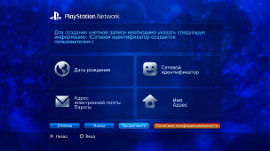

PlayStation™Network > Регистрация
Регистрация
Для использования этой функции может потребоваться обновление системного программного обеспечения.
PSNSM - сетевая служба, которая позволяет делать покупки онлайн в  (PlayStation®Store), общаться в чате через меню
(PlayStation®Store), общаться в чате через меню  (Друзья) и использовать многие другие сетевые услуги PSNSM. Для использования PSNSM требуется учетная запись Sony Entertainment Network. Выберите
(Друзья) и использовать многие другие сетевые услуги PSNSM. Для использования PSNSM требуется учетная запись Sony Entertainment Network. Выберите  (Зарегистрироваться) в меню
(Зарегистрироваться) в меню  (PlayStation™Network) и создайте учетную запись, следуя инструкциям на экране.
(PlayStation™Network) и создайте учетную запись, следуя инструкциям на экране.

Основные элементы, требующиеся для создания учетной записи
| Личные данные | Ввод сведений о зарегистрированном пользователе: день, месяц и год рождения, имя пользователя и адрес. |
|---|---|
| Основная учетная запись/Дополнительная учетная запись | Существует два типа учетных записей: основные и дополнительные учетные записи. Держатели основных учетных записей могут определять некоторые условия использования связанных дополнительных учетных записей. Основная учетная запись: основную учетную запись могут создать зарегистрированные пользователи, возраст которых не меньше указанного. Держатели основных учетных записей могут определять некоторые условия использования связанных дополнительных учетных записей. Дополнительная учетная запись: пользователи в возрасте младше требуемого для создания основной учетной записи в данном регионе могут использовать только дополнительную учетную запись. Владельцы дополнительных учетных записей не могут создавать бумажники, но могут использовать для приобретения товаров и услуг бумажник связанной основной учетной записи. Дополнительную учетную запись невозможно создать без связанной основной учетной записи. Возрастные ограничения для основных и дополнительных учетных записей зависят от страны или региона. Подробнее см. на сайте SIE вашего региона. |
| Идентификатор входа в сеть (адрес электронной почты) | Зарегистрируйте ID для использования при входе в сеть PSNSM. Используйте действительный адрес электронной почты, на который вы можете получать подтверждающие сообщения – например, при совершении покупок в магазине (PlayStation®Store). |
| Пароль |
Создайте пароль, учитывая следующие условия:
|
| Сетевой идентификатор |
Зарегистрируйте имя, которое будет открыто отображаться в сети PSNSM. После того как сетевой идентификатор создан, его нельзя изменить. Требования к сетевому идентификатору:
|
Подсказки
- Чтобы создать дополнительную учетную запись, посетите следующий веб-сайт:
https://www.playstation.com/acct/family - В зависимости от возраста ребенка для создания дополнительной учетной записи требуется компьютер. В процессе создания учетной записи на адрес электронной почты, связанный с идентификатором входа держателя основной учетной записи, будет отправлено письмо. Следуйте инструкциям в письме для завершения регистрации на ПК.
- Чтобы войти в сеть PSNSM с использованием созданной дополнительной учетной записи, необходимо связать учетную запись с именем пользователя, который войдет в систему PS3™. Подробнее см. [Использование существующей учетной записи] в разделе (PlayStation™Network) данного Руководства.
- Идентификатор входа в сеть (адрес электронной почты) и пароль будут отображаться открыто. Не делитесь этой информацией с другими.
- Для каждого пользователя системы PS3™ можно создать только одну учетную запись. Чтобы создать учетную запись, перейдите в категорию
 (Пользователи) и создайте дополнительных пользователей.
(Пользователи) и создайте дополнительных пользователей. - Подробнее об обработке персональной информации, относящейся к пользователем, см. на сайт SIE соответствующего региона.
- Для доступа к PSNSM требуется широкополосная служба Интернета. Обратите внимание, что удаленный доступ не поддерживается.
- PSNSM доступна только в определенных регионах и на определенных языках. Для получения дополнительной информации обратитесь в службу технической поддержки вашего региона.
- (Зарегистрироваться) отображается только если учетная запись еще не создана.